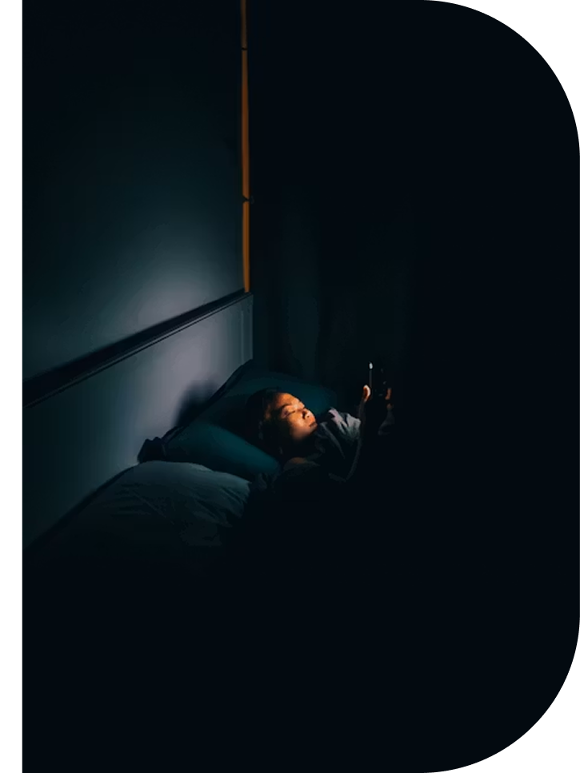
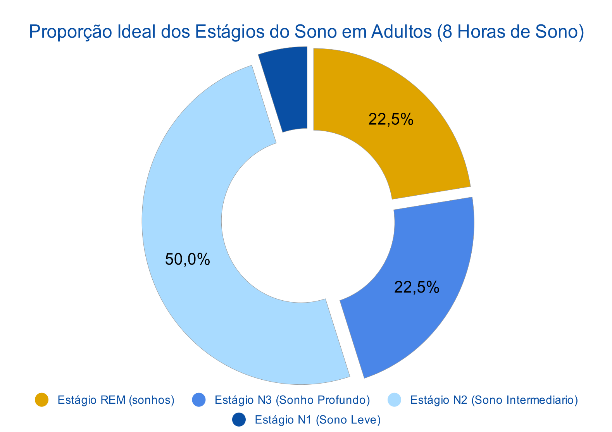

Qual é a importância do sono?

Como a luz azul de dispositivos eletrônicos afeta o sono?
A luz azul emitida por telas pode suprimir a produção de melatonina, enquanto conteúdos estimulantes, como redes sociais, jogos ou e-mails de trabalho, podem dificultar o relaxamento antes de dormir. Reduzir o tempo de uso de telas na hora anterior de dormir ou usar recursos como o modo noturno pode ajudar a minimizar o impacto dos eletrônicos no sono, embora limitar o uso de dispositivos por completo seja geralmente mais eficaz.

Estágios do sono: O que acontece em um ciclo de sono normal?
-
• O estágio 1 (N1) é o estágio mais leve do sono e ocorre quando a pessoa começa a adormecer.
-
• Na Fase 2 (N2), o corpo começa a relaxar mais profundamente. A temperatura corporal diminui, os músculos relaxam e os batimentos cardíacos e a respiração reduzem a frequência.
-
• O estágio 3 (N3 ou sono profundo) é o sono mais profundo e restaurador, permitindo que o corpo se recupere e cresça.
-
• O estágio 4 (sono REM) é onde a maioria dos sonhos ocorre, a atividade cerebral aumenta e o corpo fica temporariamente paralisado.

Paralisia do sono
A paralisia do sono é uma incapacidade temporária de se mover ou falar que ocorre imediatamente após adormecer ou acordar.
-
Os indivíduos mantêm a consciência durante os episódios, que frequentemente envolvem alucinações ou uma sensação de sufocamento.
-
Ninguém sabe exatamente o que causa a paralisia do sono, mas ela está ligada a distúrbios do sono e a certos problemas de saúde mental.